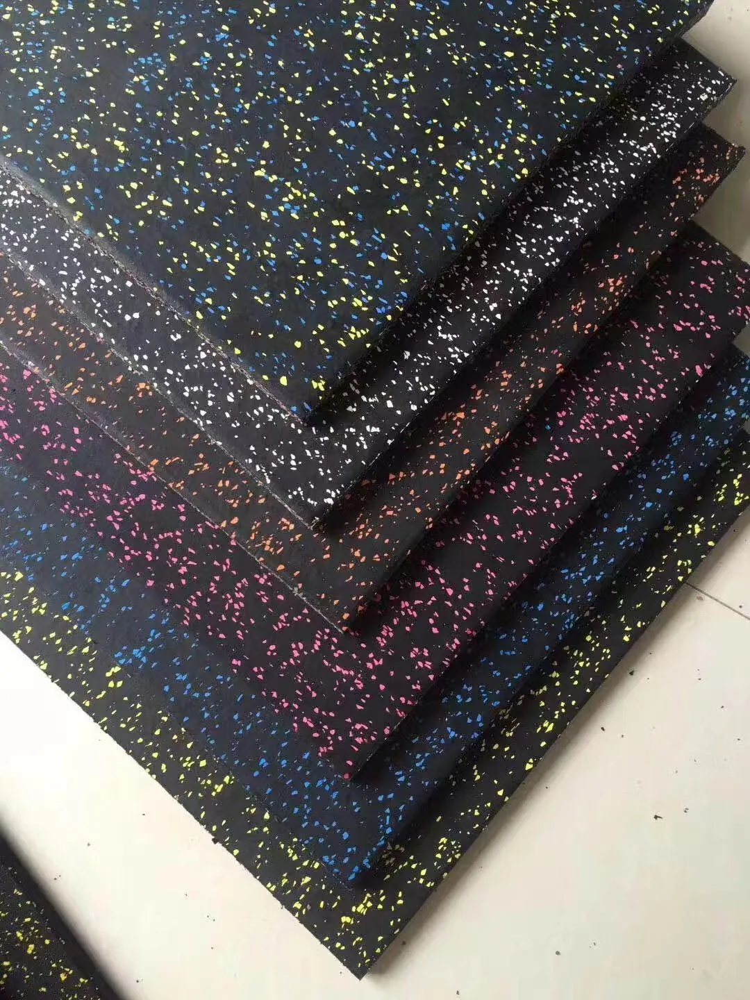

Rubber flooring rolls are usually the better starting point for large connected gym zones where fewer seams and a continuous bonded surface matter. Rubber gym tiles are usually better when the project needs thicker flooring, modular handling, lock-connected positioning or easier local replacement. UMAX supplies 3-12 mm rolls and 15-50 mm composite tiles. The right choice depends on the floor plan, subfloor, training use, installation team and delivery plan - not thickness alone.
Commercial gym flooring buyers often begin with one question: “Should I buy rubber rolls or rubber tiles?” The useful answer is not a universal winner. A commercial fitness club, hotel gym, strength studio, school training room and equipment distributor may all need different combinations of seam control, thickness, handling and packing.
This guide compares the two formats using confirmed UMAX supply specifications. It does not assign unsupported impact, acoustic, slip or fire-performance values. Those properties must be matched to the exact product, test document and project conditions.
Rubber flooring rolls vs tiles at a glance
| Comparison | Rubber flooring rolls | Rubber gym tiles |
|---|---|---|
| UMAX format | 1 m × 10 m roll | 500 × 500 mm or 1000 × 1000 mm |
| Thickness range | 3-12 mm | 15-50 mm |
| Construction | Rubber base with EPDM color speckles | Composite: 1 mm EPDM surface over rubber base |
| Seam direction | Fewer, longer seams | More modular joints |
| Installation | Bonded with compatible adhesive | Required lock connectors; adhesive selected by project |
| Handling | Plan roll movement and alignment | Handle individual tiles |
| Local replacement | Repair or replace a sheet section | Replace an individual tile when the layout allows |
| Surface direction | Solid or EPDM-speckled | Solid or EPDM-speckled |
Already have a floor plan?
Send the total area, training zones, subfloor and destination. UMAX can compare roll, tile and mixed-format directions before preparing the quotation.
Request a Flooring RecommendationWhat is commercial rubber flooring in rolls?
Rubber flooring rolls are long sheets that are unrolled, aligned and bonded to the prepared base. The UMAX standard roll is 1 metre wide and 10 metres long, with available thicknesses from 3 mm to 12 mm. Standard density is 900 kg/m³, and higher-density directions can be discussed when the project requires them.
For the complete model-level purchasing facts, see the commercial rubber flooring rolls product card.
The main planning advantage is seam reduction. One roll covers a longer connected strip than individual gym floor tiles, so the finished layout has fewer joints to align. This can be valuable in broad commercial gym areas, cardio zones, machine areas, circulation routes and other connected spaces where a continuous visual direction is preferred.

When are rubber rolls a practical choice?
- The floor area is large and connected.
- The design prioritizes fewer visible seams.
- The installer can move, align, bond and roll long sheets correctly.
- The project thickness falls within the 3-12 mm roll range.
- The subfloor is suitable for adhesive installation.
Roll flooring should not be selected only because the material appears easier to cover quickly. Long sheets still require careful alignment, seam pressure and air removal. Storage and site access also matter because the installer must move the rolls into the room before laying them out.
What are composite rubber gym tiles?
Rubber gym tiles are modular floor units. UMAX supplies 500 × 500 mm and 1000 × 1000 mm formats from 15 mm to 50 mm thick. The verified composite structure uses a 1 mm EPDM surface layer over a thicker rubber base.
For tile construction, pallet counts and lock installation details, see the composite rubber gym tiles product card.
The tiles use lock connectors during installation. These connectors are part of the installation system, even when the customer and installer decide that adhesive is unnecessary. Glue can still be added according to the substrate, perimeter, traffic level and project preference.

When are rubber tiles a practical choice?
- The project needs a thicker 15-50 mm floor format.
- The installation team prefers manageable modular pieces.
- The facility wants to replace a local unit rather than a longer sheet section.
- The room layout can be planned around tile joints and lock connectors.
- The packing plan benefits from stacked, palletized units.
Which format creates fewer seams?
Rubber rolls normally create fewer seams because every sheet covers a 1 m × 10 m strip. A 100 m² rectangular area may therefore be planned with far fewer joints than the same area built from 50 × 50 cm tiles. Fewer seams can simplify the visual direction, but they do not eliminate the need for accurate alignment and secure bonding.
Tiles create a regular joint grid. That grid is not automatically a disadvantage. Modular joints make the product easier to divide, handle and replace. The choice depends on whether the facility values a more continuous surface or modular maintenance.
How does installation differ?
Installing rubber flooring rolls
The base should be clean, flat, dry, sound and free from oil, loose debris, cracks and hollow areas. Rubber sheets normally require a compatible two-component polyurethane adhesive. A typical planning rate is approximately 1 kg of mixed adhesive per 4 m² for most commonly used products, but actual consumption varies with the adhesive brand, notched trowel and subfloor.
After the adhesive reaches the recommended working condition, the installer positions the sheet along reference lines, presses it progressively into place and uses a suitable roller across the surface. Seams require extra attention. The adhesive supplier's mixing ratio, open time and curing instructions take priority over a general online guide.
Installing rubber gym tiles
UMAX tiles use the supplied lock connectors to position adjoining units. The locks are required for the tile system shown in this guide. Adhesive is a separate decision: it may be added for particular substrates, room edges, traffic conditions or customer preferences.

How should a buyer choose thickness?
Do not treat thickness as a stand-alone quality score. The decision should include the equipment, user flow, subfloor, expected use, building condition and desired format. The available ranges already separate many projects: buyers needing 3-12 mm material will usually be comparing roll options, while buyers needing 15-50 mm will usually be planning composite tiles.
Ask the supplier to record the selected thickness on the quotation and sample approval. If the project has unusual loads, building constraints or a specified performance requirement, request the applicable product data or project testing instead of relying on a generic thickness chart.
Can both rolls and tiles use solid or speckled colors?
Yes. Solid-color and speckled directions are surface choices available across both formats. The colored speckles are EPDM. UMAX currently offers 12 standard color directions, and the buyer should confirm the physical or approved production sample before the order moves forward.

Color selection can also support zoning. A gym may use one neutral field color, a second direction around machines, or a contrasting speckle in a selected area. Color does not replace the need to confirm material structure, thickness and installation.
How do packing and freight affect the choice?
Rolls are palletized and planned around roll size, order quantity and container loading. Tiles are stacked by layer, so the number of pieces per pallet decreases as thickness increases. For practical planning, UMAX uses the following indicative tile capacities:
- 15 mm: about 70 m² per pallet.
- 20-25 mm: about 50 m² per pallet.
- 30 mm: about 30-35 m² per pallet.
- 50 mm: about 20 m² per pallet.
These quantities can be adjusted around the order, pallet height and customer transport requirement. They should be used for early freight planning, not as an inflexible loading guarantee.

What evidence should a commercial buyer request?
A useful supplier page should show more than a generic product photo. Ask for the selected format specification, a close view of the surface, the composite cross-section when buying tiles, color samples, packing information and installation direction. UMAX can also provide applicable material documents during the quotation process.
Selected coloured rubber material used in this flooring has passed the specified restricted-substance limits in SGS testing against EU RoHS (EU) 2015/863. That statement is a material-test reference, not a fire classification, VOC certification or universal claim for every configuration. Product-specific documents are checked before they are supplied.
What should be included in an RFQ?
For a useful commercial rubber flooring quotation, send:
- Total floor length and width, preferably with a drawing.
- Training zones and equipment planned for each area.
- Existing subfloor material and current condition.
- Preferred rolls, tiles or an open request for recommendation.
- Desired thickness and color direction, if already selected.
- Required quantity and acceptable project tolerance.
- Delivery city, country or destination port.
- Target installation or opening date.
The normal MOQ is 1 m². Samples are normally available within 1 day and can be prepared within 3 days if stock samples are unavailable. Typical production is about 7 days after order details are confirmed. The standard warranty is 1 year, subject to the agreed product and use conditions.
Frequently asked questions
Are rubber rolls or tiles better for a commercial gym?
Neither format is universally better. Rolls are useful for larger continuous areas with fewer seams. Tiles are useful when thicker formats, modular handling and local replacement matter. The best choice follows the actual floor plan and installation conditions.
Which rubber gym flooring has fewer seams?
Rubber flooring rolls normally create fewer seams because each sheet covers a longer continuous area. A standard UMAX roll is 1 m wide and 10 m long.
Can rubber gym tiles be installed without glue?
UMAX rubber gym tiles use lock connectors during installation. Adhesive may be optional depending on the room perimeter, substrate, traffic and project preference, but the lock connector system is still required.
Can rolls and tiles both have EPDM color speckles?
Yes. Both rubber rolls and composite tiles can use solid-color or EPDM-speckled surface directions. The approved sample should be confirmed before production.
What is the standard roll size?
The standard UMAX commercial rubber flooring roll is 1 m wide and 10 m long. Available thickness is 3-12 mm.
What information is needed for a rubber flooring quote?
Provide the floor dimensions, training use, subfloor, preferred format, thickness, color direction, quantity and delivery destination. A layout drawing or site photo makes the recommendation more accurate.
Compare the actual project, not only the product names
View the verified roll and tile specifications, then send UMAX your floor plan for a format, thickness and packing recommendation.
Article facts last verified by UMAX Sports on 25 August 2026. For a broader surface comparison, read Gym Turf vs Rubber Flooring.